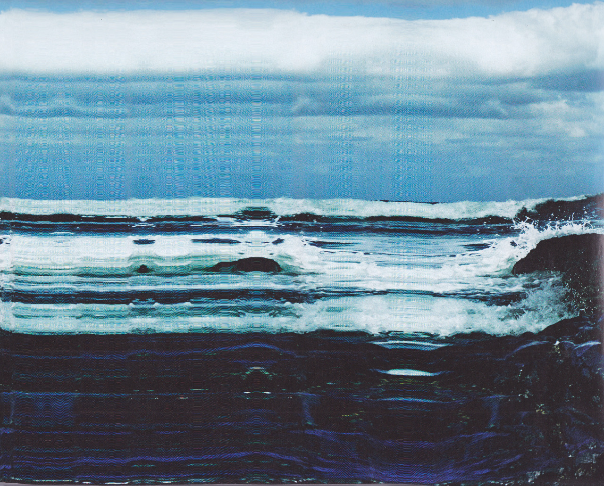
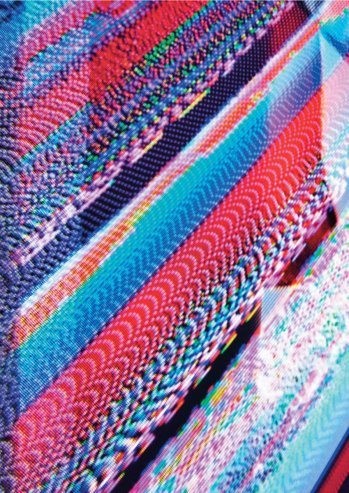
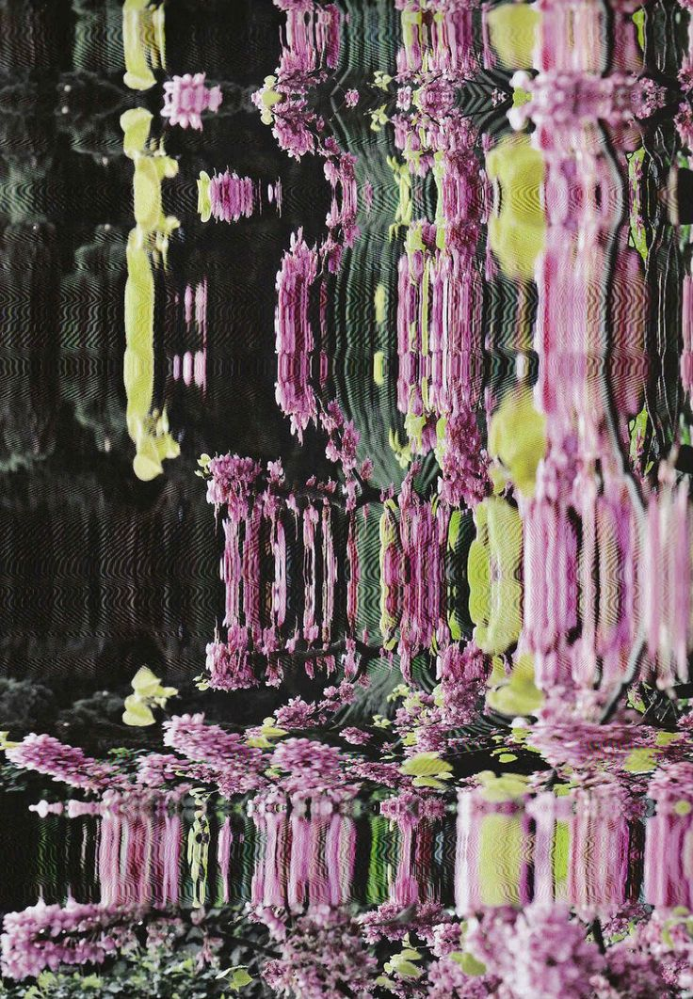
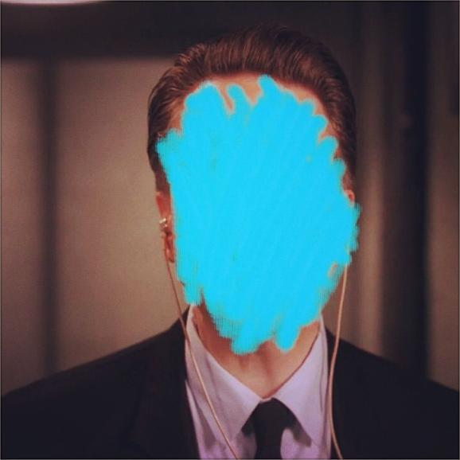
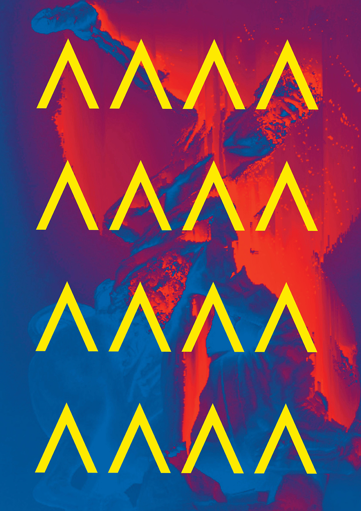
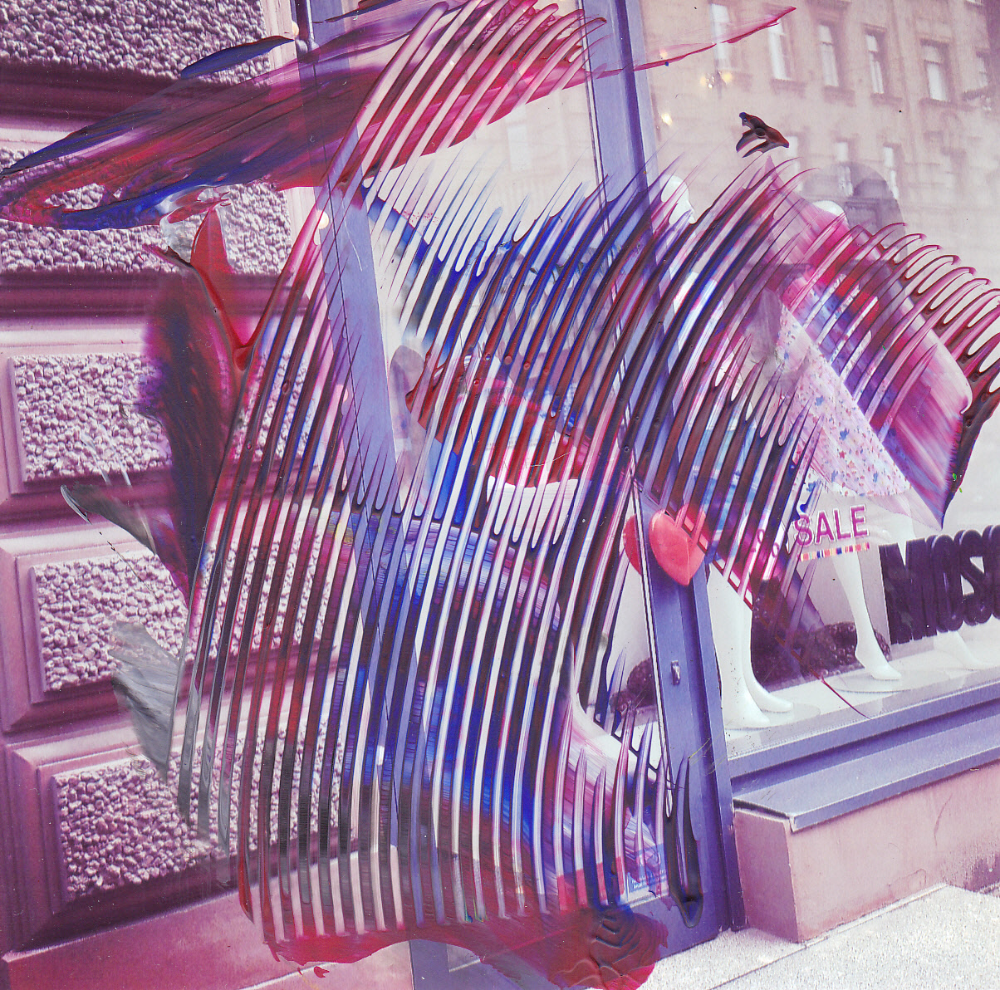

Azamat Akhmadbaev
Azamat Akhmadbaev is a self-taught artist whom explores what it means to produce digital art. Using a variety of traditional and technological processes, he produces everything from macro-glitch photographs to distorted scan paintings. His eye-catching works play with a color vibrancy existing only online and his use of line is striking. Living and working in Saint Petersburg, Russia, his works fill the gap between glitch, abstraction, minimalism and graphic art. He is also a founder/editor-in-chief of dontpostme magazine - a magazine about contemporary art.





